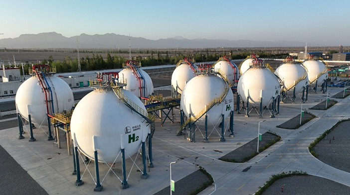
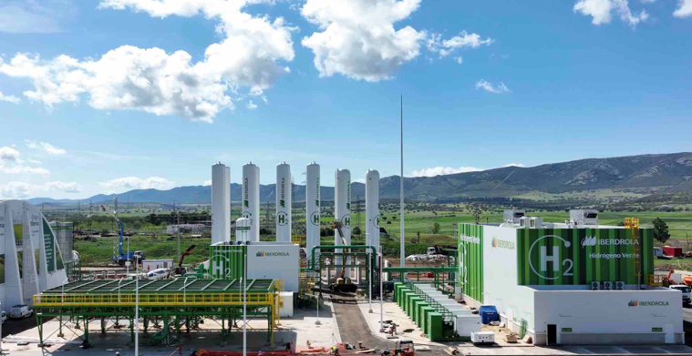
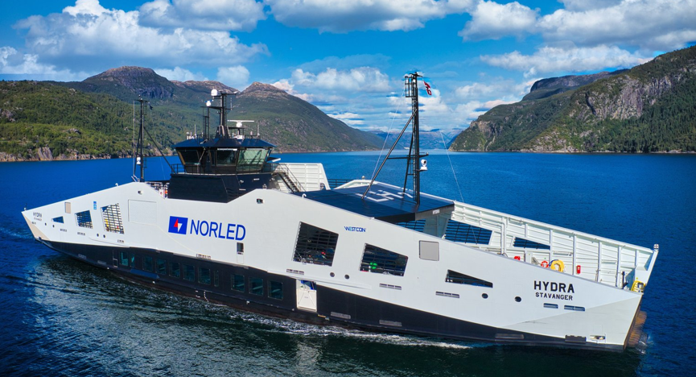
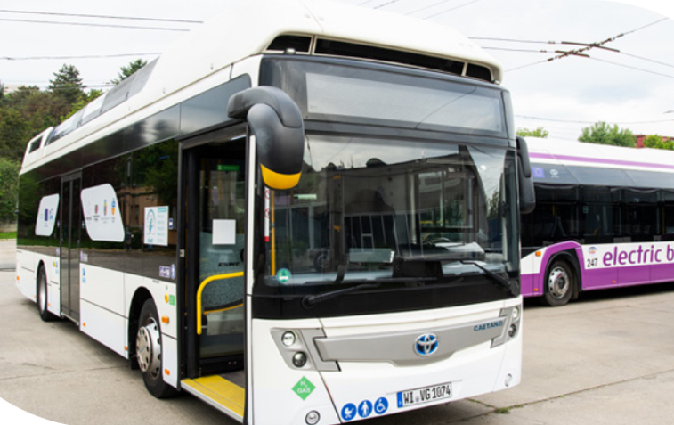
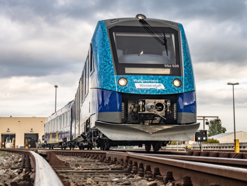

CAPÍTULO 5 PROJETOS DEMONSTRATIVOS
O hidrogênio verde, produzido a partir de fontes renováveis, é uma peça-chave para a descarbonização, e as células a combustível são a tecnologia central para converter esse hidrogênio de volta em eletricidade e calor de forma eficiente e limpa. A seguir serão apresentados alguns projetos atuais e significativos para produção de hidrogênio com eletrolisadores e que aplicam hidrogênio verde utilizando células a combustível em diferentes setores.
5.1 Projetos Demonstrativos com Eletrolisadores
5.1.1 Projeto NEOM de Hidrogênio Verde
Este é considerado o maior projeto de hidrogênio verde em construção no mundo. Localizado na futurística cidade de NEOM, o projeto visa instalar mais de 2 GW de capacidade de eletrolisadores. A produção será destinada principalmente à exportação na forma de amônia verde. O projeto integra 4 GW de energia solar e eólica para alimentar os eletrolisadores. Com a missão de construir e operar a maior planta de hidrogênio verde do mundo, o projeto visa uma produção de até 600 toneladas diárias, destinada a descarbonizar setores como o transporte marítimo e a indústria pesada [33].
A NEOM Green Hydrogen Company (NGHC) emerge como uma iniciativa na transição energética global, concebida a partir de uma joint venture que capitaliza as competências de três líderes de mercado. Esta aliança une a expertise em energia renovável da ACWA Power, a liderança global em gases industriais e hidrogênio da Air Products, e a visão futurista da NEOM, criando uma sinergia projetada para dominar o nascente mercado de hidrogênio verde [33].
A viabilidade do projeto é ancorada por uma infraestrutura de energia renovável, que alimentará a planta inteiramente com aproximadamente 4 GW de eletricidade gerada em um local com mais de 300 km². Essa capacidade provém de instalações dedicadas, compreendendo um parque solar de 2,2 GW e um parque eólico com mais de 1,6 GW [34]. A produção de hidrogênio a partir da água será realizada por um pacote de eletrólise com capacidade superior a 2,2 GW, utilizando eletrolisadores alcalinos (fornecidos pela Thyssenkrupp Nucera). Para superar os desafios de armazenamento e transporte do hidrogênio, a estratégia logística adota a sua conversão em amônia verde (NH₃), um vetor energético de alta densidade e com uma cadeia logística global já estabelecida. A meta é exportar até 1,2 milhão de toneladas anuais por meio de um cais dedicado [34].
O cronograma do projeto é agressivo, com a conclusão da infraestrutura de geração de energia prevista para meados de 2026, permitindo o início das exportações de amônia verde. A plena disponibilidade comercial do produto em escala global é então esperada para 2027 [35]. O avanço é tangível, com a NGHC reportando a conclusão de 80% do projeto no início de 2025, o que mantém o empreendimento no caminho certo para cumprir seus prazos ambiciosos [33]. A Figura 5.1 apresenta uma foto com as obras do projeto.
Figura 5.1: Foto aérea das obras do projeto NEOM de hidrogênio verde. Fonte: [34].
5.1.2 Projeto Piloto de Hidrogênio Verde Sinopec Xinjiang Kuqa
Liderado pela China Petroleum & Chemical Corporation (Sinopec), este é o maior projeto da China para a produção de hidrogênio verde a partir de energia fotovoltaica e um dos maiores projetos do gênero no mundo. Sua operação teve início em julho de 2023, marcando o comissionamento bem-sucedido de todo o processo, desde a produção e transporte de hidrogênio verde até sua aplicação direta na refinação de petróleo [36] [37]. A missão central do projeto é aproveitar os abundantes recursos de energia solar da região de Kuqa para produzir hidrogênio verde em larga escala. Esse hidrogênio é então fornecido à refinaria Tahe, também da Sinopec, para substituir o hidrogênio cinza, produzido a partir de combustíveis fósseis, que era tradicionalmente utilizado nos seus processos de refino [36].
O projeto foi desenvolvido com um investimento de aproximadamente US$ 417 milhões. A energia para o processo de eletrólise é fornecida por uma fazenda fotovoltaica dedicada com capacidade de 300 MW. A planta foi projetada para produzir 20.000 toneladas de hidrogênio verde por ano. Estima-se que o custo de produção do hidrogênio será de aproximadamente 2,55 dólares por quilograma [36] [37].
A planta possui um total de 52 conjuntos de eletrolisadores com tecnologia alcalina, cada um tem uma capacidade nominal de produção de 1.000 metros cúbicos normais (Nm³/h) de hidrogênio. Os equipamentos foram fabricados por três empresas especializadas: Cockerill-Jingli Hydrogen, LONGi Hydrogen e PERIC Hydrogen [37]. O projeto inclui dez tanques esféricos de grande porte mostrados na Figura 5.2, que oferecem uma capacidade total de armazenamento de 210.000 metros cúbicos de hidrogênio. Uma rede de dutos dedicada conecta a planta de produção à refinaria, com capacidade para transportar 28.000 metros cúbicos de hidrogênio por hora [36] [37].

Figura 5.2: Tanques para o armazenamento do hidrogênio verde do projeto Sinopec Xinjiang Kuqa. Fonte: [36].
5.1.3 Projeto Iberdrola Puertollano
A usina de Puertollano (Ciudad Real), mostrada na Figura 5.3, é composta por um parque solar fotovoltaico de 100 MW, um sistema de baterias de íon-lítio com uma capacidade de armazenamento de 20 MWh e um sistema de produção de hidrogênio através de eletrólise com tecnologia PEM de 20 MW. A capacidade de geração de 360 kg/hora de hidrogênio. Tudo a partir de fontes 100% renováveis. Com um investimento de 150 milhões de euros, a iniciativa evitará a emissão de 39.000 tCO2/ano. O hidrogênio verde produzido será usado na fábrica de amoníaco que a Fertiberia possui no município [38].

Figura 5.3: Tanques para o armazenamento do hidrogênio verde do projeto Sinopec Xinjiang Kuqa. Fonte: [36].
O hidrogênio produzido é armazenado em um sistema composto por 11 tanques, cada um com capacidade para 7 toneladas, mantendo o gás a uma pressão de 60 bar, ideal para a entrega via dutos à planta adjacente da Fertiberia, o que evidencia a eficiência da localização [39].
A iniciativa contribui diretamente para as metas do “Plano Nacional Integrado de Energia e Clima 2021-2030 (PNIEC)” da Espanha, que determina uma participação de 74% de fontes renováveis na matriz elétrica e uma meta nacional de 4 GW de capacidade instalada de eletrolisadores até 2030.
5.2 Projetos Demonstrativos com Células a Combustível
5.2.1 MF Hydra (Noruega) - Transporte Marítimo
O MF Hydra é a primeira balsa do mundo a operar comercialmente utilizando hidrogênio verde líquido e células a combustível. O projeto, liderado pela operadora de balsas e barcos expressos Norled, é um marco na descarbonização do setor marítimo. A embarcação opera em uma rota na Noruega entre Hjelmeland-Skipavik-Nesvik. Equipado com um tanque de hidrogênio líquido de 80 m3, o navio é capaz de navegar na área do fiorde entre Hjelmeland, Nesvik e Skipavik por até três semanas sem reabastecimento. Seu sofisticado sistema de propulsão permite que as baterias operem em conjunto com as células de combustível de hidrogênio líquido e inclui um recurso de redundância que permite que a balsa navegue com biodiesel. A Figura 5.4 mostra a imagem da balsa MF Hydra em operação.

Figura 5.4: Imagem do MF Hydra. Fonte [40].
O MF Hydra pode transportar até 295 passageiros e 80 veículos e é movido por duas células de combustível Ballard FCwave™, totalizando 400 kW de potência (duas células a combustível de 200 kW cada) [41]. O hidrogênio verde é armazenado em tanques criogênicos a -253 °C e, quando necessário, é aquecido e direcionado para as células a combustível, que geram eletricidade para alimentar os motores elétricos da balsa. O único subproduto é a água.
5.2.2 Projeto de Transporte Urbano JIVE
O projeto JIVE (Joint Initiative for Hydrogen Vehicles Across Europe) existe para auxiliar na comercialização de ônibus movidos a células de combustível (FCBs) como uma opção de transporte público com emissão zero em toda a Europa. O projeto visa abordar o atual alto custo de propriedade dos FCBs em comparação com os ônibus convencionais e a falta de infraestrutura de reabastecimento de hidrogênio em toda a Europa, apoiando a implementação de 131 FCBs em sete locais distribuídos entre Reino Unido, Alemanha, Holanda e Itália. Combinado com seu projeto irmão, o JIVE 2, quase 300 ônibus movidos a células de combustível foram implementados em dezesseis locais até 2025 – a maior implementação na Europa até o momento [42]. A Figura 5.5 mostra um modelo de ônibus movido por célula a combustível do projeto JIVE.

Figura 5.5: Imagem de um ônibus movido por célula a combustível do projeto JIVE.
Dentre os objetivos qualitativos do projeto podem ser citados:
demonstrar através da experiência da implementação em larga escala do uso de ônibus movidos a células a combustível;
aumentar a conscientização sobre o uso da tecnologia de células de combustível para uma implementação mais ampla, com foco nos compradores de ônibus e nos órgãos reguladores;
gerar impactos ambientais positivos operando células de combustível por longos períodos.
5.2.3 Projeto Caradia iLint
O projeto Coradia iLint representa um marco na transição energética do transporte ferroviário, sendo reconhecido como o primeiro trem de passageiros do mundo movido a hidrogênio [43], [44]. O projeto foi liderado por uma colaboração estratégica entre a Landesnahverkehrsgesellschaft Niedersachsen (LNVG), o estado da Baixa Saxônia, a fabricante Alstom, a operadora Eisenbahnen und Verkehrsbetriebe Elbe-Weser (EVB) e a empresa Linde. O Coradia iLint foi concebido com uma missão de não apenas provar que a propulsão a hidrogênio é uma alternativa viável e livre de emissões para linhas não eletrificadas em substituição às frotas a diesel [43], mas também servir como um laboratório real para estabelecer processos e padrões operacionais e acumular conhecimento para o desenvolvimento de futuras gerações de trens a hidrogênio. Embora seu sucesso pioneiro tenha sido amplamente celebrado, a implementação enfrentou desafios operacionais significativos, inerentes à introdução de uma tecnologia disruptiva [44].
O sistema de propulsão do trem de passageiros é composto por duas células de combustível, cada uma com 210 kW de potência, que convertem hidrogênio em energia elétrica para a tração. A gestão energética é otimizada por um sistema de baterias de íon-lítio, que desempenha um papel crítico ao permitir o armazenamento flexível de energia, a recuperação da energia de frenagem regenerativa e o fornecimento de um impulso de aceleração (boost) essencial para o cumprimento dos horários, além de alimentar os sistemas de bordo [44]. Para o armazenamento do combustível, o trem é equipado com dois tanques que comportam 130 kg de hidrogênio cada, operando a uma pressão de aproximadamente 350 bar. Em termos de desempenho, cada unidade tem capacidade para até 157 assentos e pode atingir uma velocidade máxima de 140 km/h [2]. A autonomia do veículo foi demonstrada ao estabelecer um recorde mundial de 1.174 km (730 milhas) com um único abastecimento de tanque. O escopo completo do projeto prevê a conversão total da frota para 14 trens de hidrogênio (Hydrogen Electric Multiple Units, ou HEMUs) [44], como o apresentado na Figura 5.6.

Figura 5.6: Trem de passageiros movido a hidrogênio, operado pela EVB. Fonte: [44].
A adoção da tecnologia de hidrogênio pelo projeto Coradia iLint oferece vantagens estratégicas substanciais, como a operação limpa e silenciosa, emitindo apenas vapor de água e condensação [43]. Esta abordagem contorna os elevados custos associados à eletrificação de linhas ferroviárias e elimina a dependência do diesel, cujo preço e aceitação pública se tornaram problemáticos. Adicionalmente, o projeto fomenta a economia regional ao possibilitar a produção local de hidrogênio verde. Contudo, a implementação prática revelou desafios operacionais consideráveis. Os obstáculos tecnológicos incluíram a baixa disponibilidade dos trens e componentes nos primeiros meses. Foi necessário o desenvolvimento de processos operacionais e padrões de segurança totalmente novos. Por fim, as realidades econômicas se manifestaram em custos adicionais inesperados [44].